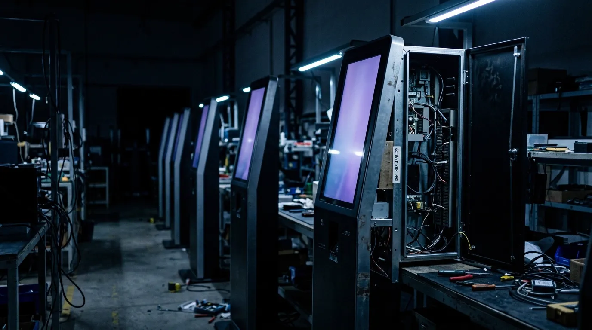
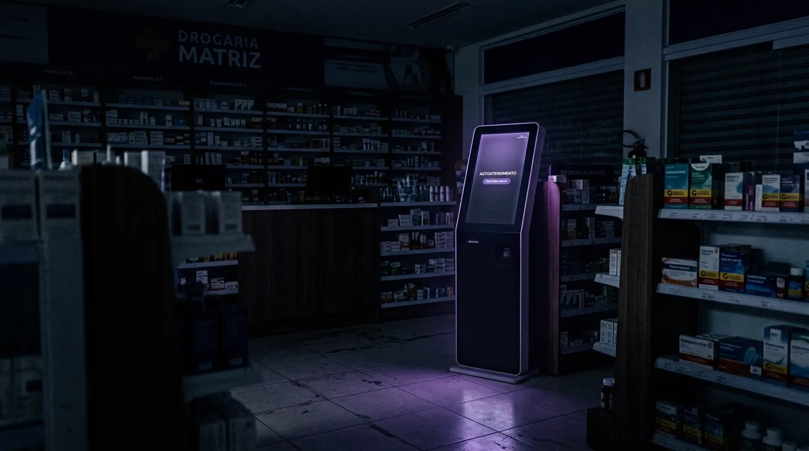
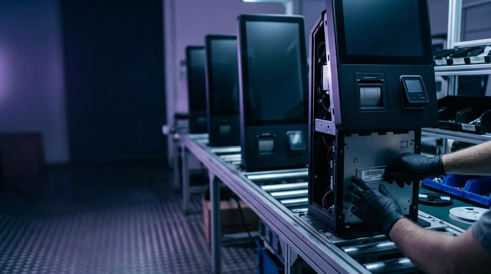
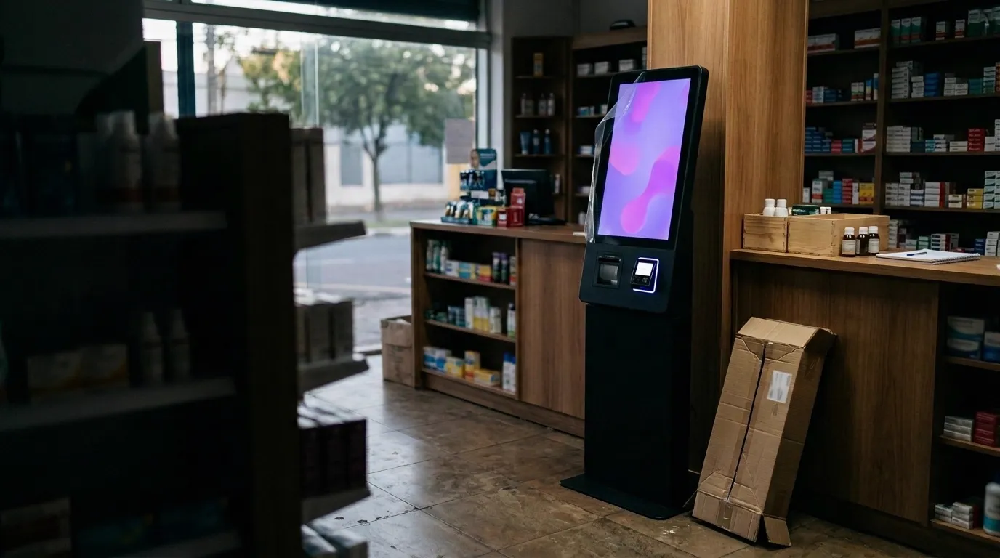
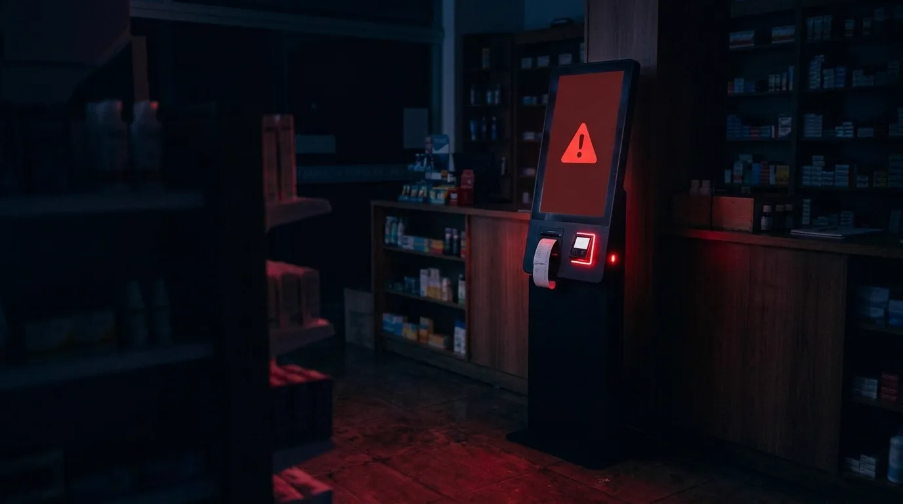
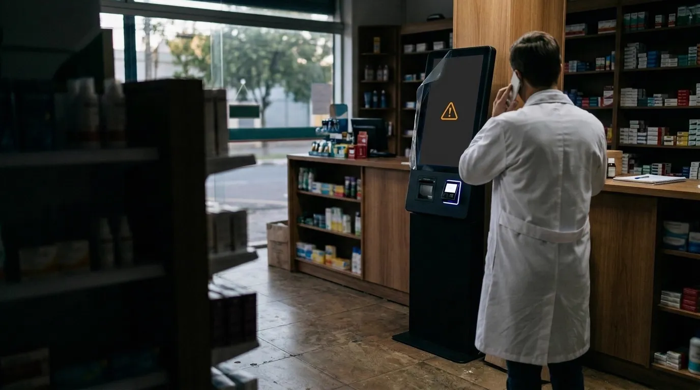
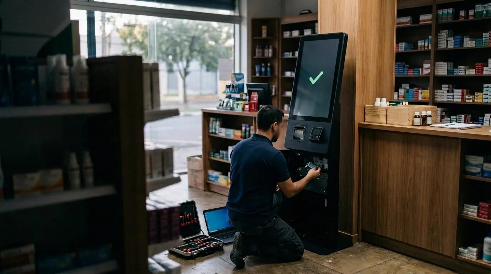

Identifica.
Instalado na máquina, lê o estado dela a cada 10 minutos. Quando algo sai do normal, aponta o suspeito antes de qualquer visita.

Pós-venda para empresas · NovaSync + Konso
Para quem fabrica, integra ou opera máquinas. O Konso identifica o problema, você fala com o seu cliente e a NovaSync atende.


Instalado na máquina, lê o estado dela a cada 10 minutos. Quando algo sai do normal, aponta o suspeito antes de qualquer visita.
O diagnóstico chega pronto. O que dizer e quando é decisão sua. O seu cliente vê a sua marca cuidando da máquina dele.
O que tem solução conhecida é resolvido à distância. O resto vai para um técnico da região, que sai sabendo o que olhar.





Você grava o código da máquina na linha de produção, no formato que já usa. Sem cadastro manual depois.
código MQ-2026-0001-0042 origem fábrica · lote 0001 destino a definir
Na primeira vez que liga, a máquina aparece na sua conta do Konso. Você sabe de onde veio e para onde foi.
MQ-2026-0001-0042 · primeira leitura cliente Farmácia Central · Loja 4 estado tudo certo
O Konso junta as leituras e ordena os suspeitos. Você fica sabendo antes de o cliente ligar.
impressora · fila presa há 20 min 3ª vez em 7 dias suspeito mecanismo da impressora
Com a hora, a evidência e o próximo passo na mão. A conversa é entre vocês dois.
para Farmácia Central assunto impressora do totem próximo visita de técnico da região
À distância ou no local, com técnico da região. O relatório fica registrado para você.
visita técnico da região trocado mecanismo da impressora resolvido no local · relatório anexado
A estrutura por trás
Parceiros de referência, já perto de onde a máquina está.
Do interior às capitais, com a mesma coordenação.
Cada máquina manda o próprio retrato para o Konso.
Madrugada, domingo e feriado entram na mesma conta.
Tem até 10 máquinas no seu próprio negócio, como uma loja ou uma clínica? O plano aberto do Konso começa em R$ 37 por máquina, por mês.
Não. O relacionamento continua seu: o Konso entrega o diagnóstico a você, você fala com o seu cliente e a NovaSync atende.
Não. O Konso é um programa instalado na própria máquina. Sem sensor, sem caixa e sem chip.
Pode. Você grava o código na linha de produção, no formato que já usa. Quando a máquina liga no cliente, ela aparece na sua conta.
Um total por mês para o seu parque, com chamados inclusos por ano. Você conhece o valor final antes de assinar.
Hoje, em máquinas com Windows. Android e Linux são os próximos passos.
Em todo o Brasil: são 350 técnicos nos 27 estados. O que tem solução conhecida é resolvido à distância, sem visita.
Conte o tamanho do parque e onde ele está. Montamos a proposta com o total mensal e os chamados inclusos por ano.
Montar o meu pós-venda